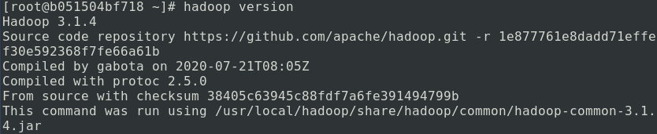

Hadoop はクラスター向けに設計されたソフトウェアであるため、その使用方法を学ぶ際には、複数のコンピューターに Hadoop を構成する必要が生じることが避けられません。これは学習者にとって多くの障壁を生み出します。主に2つあります：
- 高価なコンピュータクラスター。複数のコンピューターで構成されるクラスター環境には、高価なハードウェアが必要です。
- デプロイとメンテナンスが難しい。多数のコンピューターに同じソフトウェア環境をデプロイすることは膨大な作業であり、柔軟性に乏しく、環境を変更した後に再デプロイするのが困難です。
これらの問題を解決するために、非常に成熟した方法があります。Docker。
Docker はコンテナ管理システムであり、仮想マシンのように複数の「仮想マシン」（コンテナ）を実行してクラスターを構成できます。仮想マシンはコンピューターを完全に仮想化するため、大量のハードウェアリソースを消費し効率が低下しますが、Docker は独立した再現可能な実行環境のみを提供します。実際には、コンテナ内のすべてのプロセスは依然としてホスト上のカーネルで実行されるため、その効率はホスト上のプロセスとほぼ同じ（100%に近い）です。
このチュートリアルでは、Docker を基盤環境として Hadoop の使用法を説明します。Docker の使い方がわからず、より良い方法も知らない場合は、以下を学習してください。Docker チュートリアル。
注：Windows ユーザーは、仮想マシン方式を使用して Docker をインストールすることをお勧めします。
Docker デプロイ
Docker コマンドラインに入ったら、Hadoop 実行環境として Linux イメージをプルします。ここでは CentOS イメージの使用を推奨します（Debian やその他のイメージでは一時的に問題が発生する場合があります）。
docker pull centos:8
次に、docker imagesコマンドで現在のローカルイメージを確認できます：

次に、コンテナを作成します：
docker run -d centos:8 /usr/sbin/init
このコマンドでdocker ps実行中のコンテナを確認できます：

コンテナに Hello World を出力させることができます：

ここまでで、Docker のインストールとデプロイが成功していることが確認できます。
コンテナの作成
Hadoop は単一デバイス上での実行をサポートしています。主に2つのモードがあります：スタンドアロンモードと擬似クラスターモードです。
この章では、Hadoop のインストールとスタンドアロンモードについて説明します。
Java と SSH 環境の設定
次に、Java と SSH を含む環境を構成するための、java_ssh_proto という名前のコンテナを作成します：
docker run -d --name=java_ssh_proto --privileged centos:8 /usr/sbin/init
その後、コンテナに入ります：
docker exec -it java_ssh_proto bash

ミラーを設定します：
sed -e 's|^mirrorlist=|#mirrorlist=|g' \
-e 's|^#baseurl=http://mirror.centos.org/$contentdir|baseurl=https://mirrors.ustc.edu.cn/centos|g' \
-i.bak \
/etc/yum.repos.d/CentOS-Stream-AppStream.repo \
/etc/yum.repos.d/CentOS-Stream-BaseOS.repo \
/etc/yum.repos.d/CentOS-Stream-Extras.repo \
/etc/yum.repos.d/CentOS-Stream-PowerTools.repo
OpenJDK 8 と SSH サービスをインストールします：
yum install -y java-1.8.0-openjdk-devel openssh-clients openssh-server
次に、SSH サービスを有効にします：
systemctl enable sshd && systemctl start sshd
Ubuntu システムの場合は、以下のコマンドで SSH サービスを起動します：
systemctl enable ssh && systemctl start ssh
ここまでで、障害が発生しなければ、Java 実行環境と SSH 環境を含むプロトタイプコンテナが作成されています。これは非常に重要なコンテナです。ここでまずコンテナ内で exit コマンドを使用してコンテナを終了し、次に以下の2つのコマンドを実行してコンテナを停止し、java_ssh という名前のイメージとして保存することをお勧めします：
docker stop java_ssh_proto docker commit java_ssh_proto java_ssh
Hadoop インストール
Hadoop のダウンロード
Hadoop 公式サイトのアドレス：http://hadoop.apache.org/
Hadoop リリース版のダウンロード：https://hadoop.apache.org/releases.html
現在のテストでは、3.1.x と 3.2.x バージョンの互換性が比較的良好です。このチュートリアルでは、3.1.4 バージョンを例として使用します。
Hadoop 3.1.4 のミラーアドレス。tar.gz 圧縮パッケージファイルをダウンロードして、予備として保存してください。
Hadoop スタンドアロンコンテナの作成
次に、先ほど保存した java_ssh イメージを使用して、hadoop_single という名前のコンテナを作成します：
docker run -d --name=hadoop_single --privileged java_ssh /usr/sbin/init
ダウンロードした Hadoop 圧縮パッケージをコンテナ内の /root ディレクトリにコピーします：
docker cp <你存放hadoop压缩包的路径> hadoop_single:/root/
コンテナに入ります：
docker exec -it hadoop_single bash
/root ディレクトリに入ります：
cd /root
ここには、先ほどコピーした hadoop-x.x.x.tar.gz ファイルが置かれているはずです。これを解凍します：
tar -zxf hadoop-3.1.4.tar.gz
解凍すると、hadoop-3.1.4 というフォルダーが得られます。これを一般的な場所にコピーします：
mv hadoop-3.1.4 /usr/local/hadoop
次に、環境変数を設定します：
echo "export HADOOP_HOME=/usr/local/hadoop" >> /etc/bashrc echo "export PATH=$PATH:$HADOOP_HOME/bin:$HADOOP_HOME/sbin" >> /etc/bashrc
その後、docker コンテナを終了し、再度入ります。
このとき、echo $HADOOP_HOME の結果は /usr/local/hadoop になっているはずです。
echo "export JAVA_HOME=/usr" >> $HADOOP_HOME/etc/hadoop/hadoop-env.sh echo "export HADOOP_HOME=/usr/local/hadoop" >> $HADOOP_HOME/etc/hadoop/hadoop-env.sh
この2つの手順で、hadoop に組み込まれている環境変数が設定されます。その後、以下のコマンドを実行して成功したかどうかを確認してください：
hadoop version

ここまで来れば、Hadoop スタンドアロン版の設定が成功したことになります。